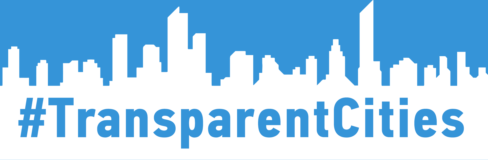

Рейтинг прозорості інвестиційного сектору.
100 найбільших міст України
Ця ініціатива впроваджується в рамках проекту «Прозорість і доброчесність публічного сектору», який виконується Програмою розвитку ООН в Україні та фінансується Міністерством закордонних справ Данії протягом 2015-2018 рр. Думки, висновки чи рекомендації належать авторам та упорядникам цього видання і не обов’язково відображають погляди Міністерства закордонних справ Данії, Програми розвитку Організації Об’єднаних Націй чи інших агенцій ООН.
